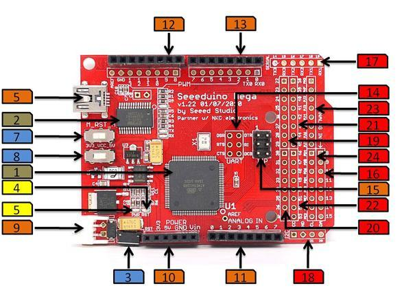

Seeeduino Mega is a powerful microcontroller derived from Arduino Mega. It features ATmega2560 processor which brings a large number of I/O pins, as much as 70 digital I/O, 16 analog inputs, 14 PWM, and 4 hardware serial ports. Compared to Arduino Mega, we shrunk the volume of Arduino Mega by at least 30% and made it 100% compatible with Seeed Shield products. And as a member of Seeeduino series, Seeeduino Mega inherits deliberate details from Seeeduino, like selectable operating voltage(3.3V/5V), right angle reset button, and so on.
Model:ARD121D2P
Operating Voltage: 5V / 3.3V
Operating Temperature: -20~70℃
Input Voltage: 6-20V
DC Current per IO pin: 40mA
Flash Memory: 256k
SRAM: 8k
EEPROM: 4k
Dimensions: 71*53*11.3 mm
Power Jack: 2.54mm, 2pin JST
Peripheral Features are multiplexed with General Purpose Input/Output [GPIO] Pins, for multiplexing and assignment please check Pin Definitions. For more details on the alternate pin functions please refer to the Atmega2560 datasheet.
8-Bit Timers/Counters: 2
16-Bit Timers/Counters: 4
8-Bit Pulse Width Modulator (PWM): 4
Programmable PWM Channels: 12
Programmable PWM Resolution (Bits): 2 -16
Analog to Digital Input Channels (ADC): 16
ADC Resolution (Bits): 10
Programmable USART Channels: 4
On-Chip Analog Comparator: 1
Master/Slave SPI Interface: 1
Byte Oriented 2 -Wire Serial Interface: 1
The following diagram illustrates the placement of important integrated circuits, indicator LEDs, connectors common to all Arduino based development platforms and the ones specific to Seeeduino Mega.

NOTES
| Pin | Name | Function and Note |
|---|---|---|
| 1 | Reset | A switch that would reset the SeeeduinoMega |
| 2 | 3.3V | 3.3V Source |
| 3 | 5V | 5V Source |
| 4 |
Gnd |
Ground |
| 5 |
Vin |
A connection to the main source, this is used when the shield's supply is to be taken from the main power source |
| 0~7 | ADC / GPIO:PF0-PF7 | Analog to Digital channels multiplexed with Port-F, used to interface with analog sensors like potentiometers, voltage , current, temperature, pressure, humidity sensors as well as analog gyroscopes and accelerometers |
| 8~9 | GPIO:PH5-PH6 | General Purpose Input Output Pins |
| 10~13 |
GPIO:PB4-PB7 |
General Purpose Input Output Pins |
| 14 |
GND |
A connection to the ground |
| 15 |
AREF |
The analog reference used as reference for the Seeeduino Mega’s ADC channels, Analog reference is decoupled to the ground using a capacitor for stability purposes. |
| 0 |
GPIO:PE0/RX0 |
Receive channel for USART0 |
| 1 |
GPIO:PE1/TX0 |
Transmit channel for USART0 |
| 2~3 |
GPIO:PE4-PE5 |
General Purpose Input Output Pins |
| 4 |
GPIO:PG5 |
General Purpose Input Output Pin |
| 5 |
GPIO:PE3 |
General Purpose Input Output Pin |
| 6~7 |
GPIO:PH3-PH4 |
General Purpose Input Output Pins |
| |
ICSP |
|
| 8~15 |
ADC / GPIO:PK0-PK7 |
8 Analog to Digital channels multiplexed with Port-K |
| 1 |
RXD1 / GPIO:PD2 |
Receive channel for USART1 |
| 2 |
TXD1 / GPIO:PD3 |
Transmit channel for USART1 |
| 3 |
RXD2 / GPIO:PH0 |
Receive channel for USART2 |
| 4 |
TXD2 / GPIO:PH1 |
Transmit channel for USART2 |
| 5 |
RXD3 / GPIO:PJ0 |
Receive channel for USART3 |
| 6 |
TXD3 / GPIO:PJ1 |
Transmit channel for USART3 |
| I2C |
|
Also known as the Two Wire Interface, I2C is an industry standard communication protocol that is used to communicate with ADCs, EEPROMs, DACs, sensors, and microcontrollers. |
| 1 |
Vcc |
|
| 2 |
GND |
|
| 3 |
SCL / GPIO:PD0 |
I2C-Clock |
| 4 |
SDA / GPIO:PD1 |
I2C-Serial Data |
| 22~29 |
GPIO:PA0-PA7 |
General Purpose Input Output Pins |
| 30-37 |
GPIO:PC0-PC7 |
General Purpose Input Output Pins |
| 38 |
GPIO:PD7 |
General Purpose Input Output Pin |
| 39~41 |
GPIO:PG2 - PG0 |
General Purpose Input Output Pins |
| 42~45 |
GPIO:PL7 - PL4 |
General Purpose Input Output Pins |
| 46~49 |
GPIO:PL3 - PL0 |
General Purpose Input Output Pins |
| SPI |
|
|
| 50 |
MISO / GPIO:PB3 |
SPI - Master In Slave Out |
| 51 |
MOSI / GPIO:PB2 |
SPI - Master Out Slave In |
| 52 |
SCK / GPIO:PB1 |
SPI - Clock |
| 53 |
GPIO:PB0 |
General Purpose Input Output Pin |
| PH2 |
GPIO:PH2 |
General Purpose Input Output Pin |
| PH7 |
GPIO:PH7 |
General Purpose Input Output Pin |
| PJ2~PJ7 |
GPIO:PJ2-PJ7 |
General Purpose Input Output Pins |
| PD4~PD6 |
GPIO:PD4-PD6 |
General Purpose Input Output Pins |
| PG4~PG3 |
GPIO:PG4-PG3 |
General Purpose Input Output Pins |
| PE7 |
GPIO:PE7 |
General Purpose Input Output Pin |
| PE6 |
GPIO:PE6 |
General Purpose Input Output Pin |
| PE2 |
GPIO:PE2 |
General Purpose Input Output Pin |